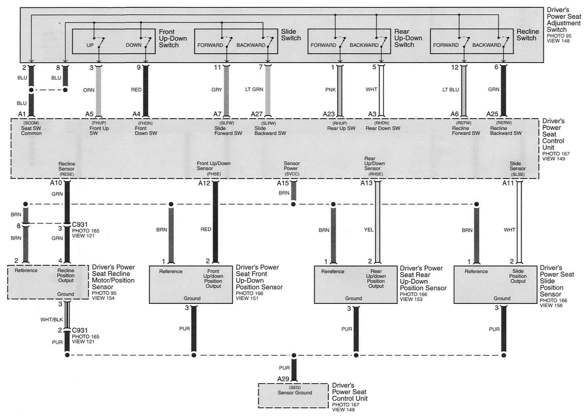
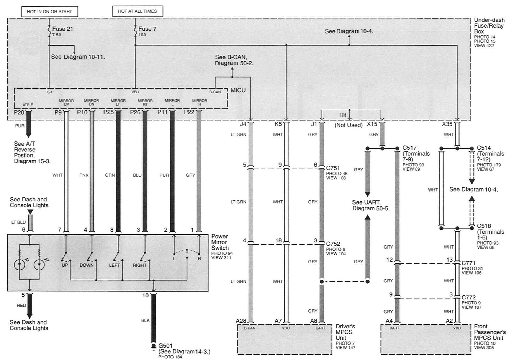
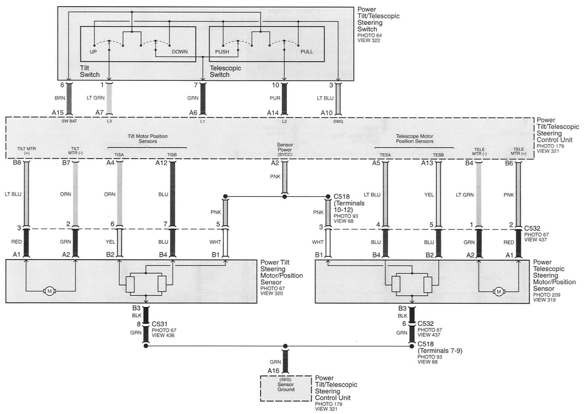

Wiring Diagrams
Diagram 143-0:

Diagram 143-1:

Diagram 143-2:

Diagram 143-3:

Diagram 143-4:

Diagram 143-5:

Diagram 143-6:

Diagram 143-7:

Diagrams: Other diagrams referred to by number (See Diagram ##-#, etc.) within these diagrams can be found at Diagrams by Number. Diagrams By Number
Locations: Location photographs (references to PHOTOS) referred to within these diagrams can be found at Locations by Photo Number. Locations By Photo Number
Connector Views: Connector terminal views (references to VIEWS) referred to within these diagrams can be found at Connector Views by View Number. Connector Views By View Number